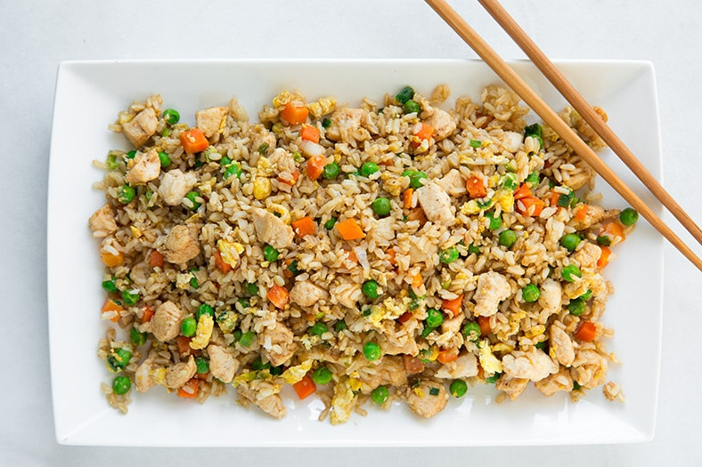

Chicken Fried Rice

Description
This is a meal that I thoroughly enjoy while on my "bulking" phase
of my fitness journey. It is rather simple to put together, and the
macros are great.
Ingredients
- 10 oz. chicken breast tenderloins
- 1 cup extra long grain rice, leftovers preferred
- 2 tbsp avocado oil
- 2/3 cup frozen mixed vegetables
- 2 eggs
- 1 tbsp soy sauce
- 4 garlic cloves, minced
- 1/4 onion, diced
Steps
-
Heat 1 tbsp oil in large skillet over medium heat. Add onion and
garlic until slightly brown, then add in your chicken breasts.
Season with salt and pepper to taste and stir-fry for 5 to 6 minutes.
-
Once chicken is finished cooking, remove from heat and set aside in
separate bowl/container. Heat 1 tbsp oil in large skillet over medium
heat. Stir in frozen vegetables and saute for about 2 minutes, or
until thawed. Once thawed, add rice. Pour in soy sauce and mix thoroughly.
-
Finally, stir in scrambled eggs. Once eggs are about 80% cooked, mix in
the cooked chicken that was set aside earlier. Serve hot and enjoy!